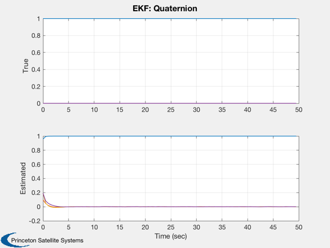
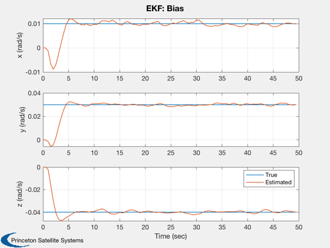
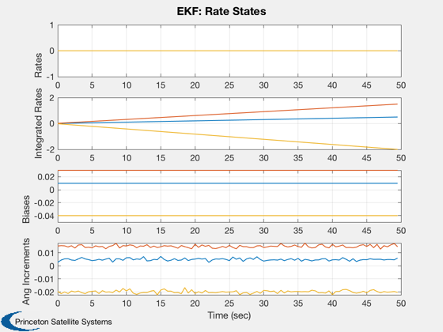
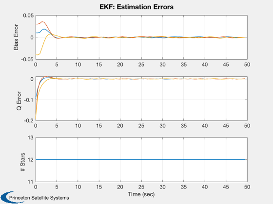

Test a star sensor attitude determination system with gyros.
dT is the time step for the attitude determination system. You can numerically integrate with a smaller time step by setting nInt > 1.
------------------------------------------------------------------------- See also StellarAttDetEKF, StarDataGeneration, StarSensor and RandSC -------------------------------------------------------------------------
Contents
%-------------------------------------------------------------------------- % Copyright (c) 2016 Princeton Satellite Systems, Inc. % All rights reserved. %-------------------------------------------------------------------------- % Since version 2017.1 % Version 2018.1 Added RIG noise to the simulation. %--------------------------------------------------------------------------
Always have the same random numbers
Comment this out to test with different numbers each run
rng(0); % Constants degToRad = pi/180; % User inputs fOV = 30*degToRad; fScale = 1; nStars = 1000; rIGNoise1Sigma = 0.001; % rad qBToS = [cos(pi/4); 0; sin(pi/4); 0]; uS = [0 0 1]'; nPixels = 1024; angRes = 5*fOV/nPixels; options = StarIDPyramid; options.pixelMapScale = fScale; nInt = 2; % The number of integration steps per estimation step inr = [1000 0 0;0 2000 0; 0 0 2000]; invInr = inv(inr); torque = zeros(3,1); uRIG = eye(3); % Rate integrating gyro vectors nSim = 100; dT = 0.5; % Time step (sec) % Attitude determination system initialization b = zeros(3,1); % Initial bias estimate p = diag([0.01 0.01 0.01 0.001 0.001 0.001]); % Covariance matrix Q = 0.01*eye(6); % Plant noise matrix r = 0.0001; % Noise for a star measurement q = QUnit([1;0.1;0.2;0.2]); % Initial estimate
Initial state
q0 = [1;0;0;0]; bias = [0.01; 0.03; -0.04]; wo = 0; % 0.01 omega = [wo;0;0]; intRate = dT*(omega + bias); x = [q0;omega;intRate;bias]; % True state nRWRIG = zeros(3,1); nBRIG = zeros(3,1); nORIG = zeros(3,1); betaRIG = zeros(3,1); xRIGOld = zeros(3,1); % Set up the simulation t = 0; x(1:4) = QUnit(x(1:4)); % Set up arrays for plotting angInc = zeros(3,1); xPlot = zeros(13,nSim); qPlot = zeros( 4,nSim); bPlot = zeros( 3,nSim); aPlot = zeros( 3,nSim); tPlot = zeros( 1,nSim); qEPlot = zeros( 4,nSim); sDPlot = zeros( 1,nSim); qErrPlot = zeros( 4,nSim); % Create a random star catalog [starMatrix,starCatalog] = RandSC(nStars,2); dStarData = StarDataGeneration( starCatalog, fOV*sqrt(2), angRes ); starData = struct('starMatrix',dStarData.starMatrix,'starID',[],'uMeas',[],'uCatalog',[]);
StarDataGeneration: Eliminating stars that cannot be separated based on the input angular resolution.
StarDataGeneration: 2 stars will be eliminated that are too close to other stars.
998 stars will be in the reduced catalog.
Run the simulation
dTInt = dT/nInt; for i = 1:nSim % Attitude Determination starSensorData = StarSensor( x(1:4), qBToS, uS, starMatrix, fOV, fScale ); [angInc, xRIGOld] = RIGOut( x(8:10), xRIGOld, nORIG ); angInc = angInc + rIGNoise1Sigma*randn(3,1); % Star identification if( ~isempty(starSensorData) ) starMeas.pixelIntensity = starSensorData(1,:); starMeas.pixelLocation = starSensorData(2:3,:); [starData.starID,starData.uMeas,starData.uCatalog] = StarIDPyramid( starMeas, dStarData, options ); else starData.starID = []; starData.uMeas = []; starData.uCatalog = []; end % Plotting bPlot(:,i) = b; xPlot(:,i) = x; aPlot(:,i) = angInc; tPlot(i) = t; qEPlot(:,i) = q; sDPlot(:,i) = length(starData.starID); qErrPlot(:,i) = QMult(QPose(q),x(1:4)); % The extended Kalman Filter [q, b, p] = StellarAttDetEKF(angInc,q,dT,b,p,Q,r,qBToS,starSensorData,starData,fScale); % Simulation for k = 1:nInt x = RK4( @FRBwRIG, x, dTInt, t, inr, invInr, torque, uRIG, nRWRIG, nBRIG, betaRIG ); t = t + dTInt; end end
Plot results
[tPlot, tLbl] = TimeLabl(tPlot);
yLbl = {'True' 'Estimated'};
Plot2D( tPlot, [xPlot(1:4,:);qEPlot],tLbl,yLbl,'EKF: Quaternion', 'lin',{'1:4' '5:8'})
yLbl = {'x (rad/s)' 'y (rad/s)' 'z (rad/s)'};
Plot2D( tPlot, [xPlot(11:13,:);bPlot],tLbl,yLbl,'EKF: Bias','lin', {'[1 4]' '[2 5]' '[3 6]'})
legend('True', 'Estimated')
yLbl = {'Rates' 'Integrated Rates' 'Biases' 'Ang Increments'};
Plot2D( tPlot, [xPlot(5:13,:);aPlot],tLbl,yLbl,'EKF: Rate States', 'lin',{'1:3' '4:6' '7:9' '10:12'})
yLbl = {'Bias Error' 'Q Error' '# Stars'};
Plot2D( tPlot, [xPlot(11:13,:)-bPlot;qErrPlot;sDPlot],tLbl,yLbl,'EKF: Estimation Errors','lin',{'1:3' '5:7' '8'})
%--------------------------------------
   